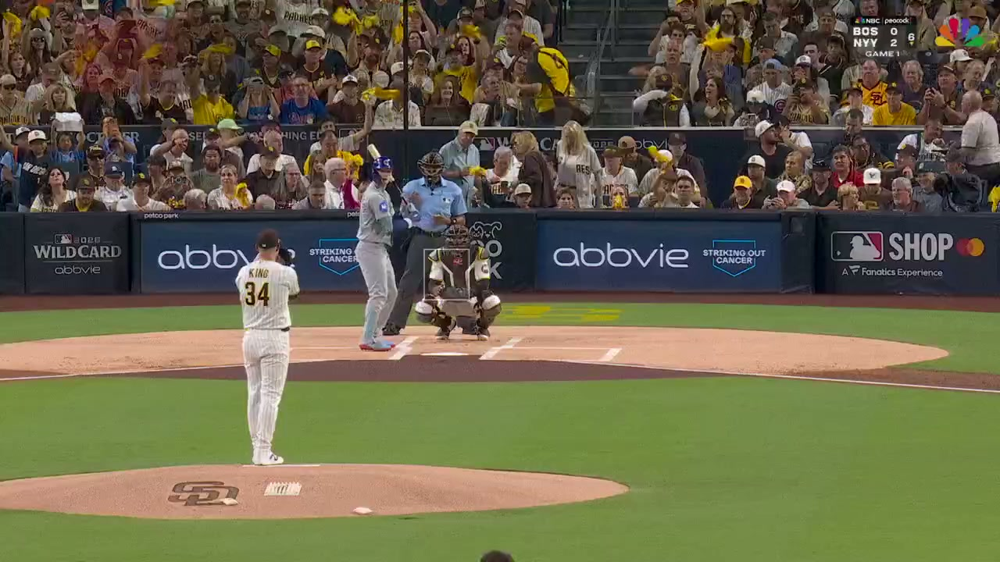

공식 투구 영상 · 3구2026 NL WILD CARD · GAME 1
시카고 컵스 @
샌디에이고 파드리스
현지 2026.09.29 · 한국 09.30 · Petco Park
- 첫 타석 투수
- Michael King마이클 킹
- 첫 타석 타자
- Pete Crow-Armstrong피트 크로암스트롱
71타석·262구를 이닝과 타석으로 탐색합니다. 추천 246구, 미지원 16구를 구분하며 첫 타석 3구에는 공식 영상이 연결되어 있습니다. 나머지 투구도 결과를 공개해 비교할 수 있습니다.
경기 전체 열기저장 응답 재생 · 실시간 모델 실행 아님